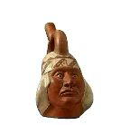
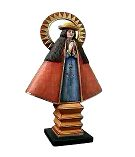
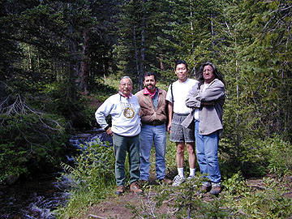

|  |  |
|
|
|
QuicktimeVR virtual reality objects
by Ruben G. Mendoza and Charlie Wallace.
Copyright Ruben G. Mendoza, 1999.
| Virtual Reality || QTVR || Flash Slide Shows || Media Footage || Image Archive || Audio Notes || Project Video |
The CSUMB Institute of Archaeology is now fully equiped to produce both object images, as well as 360-degree landscape panoramas, for the virtual museum and online instructional media development projects currently underway at Old Mission San Juan Bautista.
Note: If you do not already have the QTVR plugin/player loaded on your computer, you may need to download the player so as to view the images as they were intended to be seen. Each image may be rotated a full 360 degrees with the click of your cursor. In order to download the player, click on the QTVR icon located just below the images above.
This feature will require that your computer currently have the QTVR player installed on your hard drive. If you do not have the player, please feel free to download the player by clicking the QTVR plug-in button included just below the QTVR samples on this page.
See QTVR Polar Bear Skull created by SBS technician Charlie Wallace.
2. The Archaeology of a California Mission
3. Lowriders: The Chicano Counterculture
If you would like access to the image database, and are not currently a student of the ASTV, please feel free to complete the registration form located at this link. For those wishing access to high resolution TIFF or JPEG images, please contact Professor Mendoza at ruben_mendoza@csumb.edu

Photo: The above photograph was taken with a Nikon Coolpix 950 digital camera as part of an 1800 acre archaeological survey of the Caribou Ranch portion of the Indian Peaks Wilderness area of Colorado conducted in August, 1999. As the result of a one week period on the pedestrian survey, Dr. Mendoza produced some 300 such digital images of the project area and its archaeological and historical remains. Dr. Charles Cambridge (Navajo/Dene) is lead archaeologist and owner of Medicine Bow Consultants of Boulder, Colorado, one of the few, if not the only, Native American-owned archaeological firms in the country. Other team members pictured are Dr. Ruben Mendoza, Spencer Wong, and Mike Mitchell (Pima).
The audio notes portion of this site provides a low tech answer for those wishing to obtain an overview of project developments at Old Mission San Juan Bautista. In addition, this portion of the site will entail audio summaries of lectures concerned with the many and varied aspects of archaeology in the Information Age.
In order to use the audio notes portion of this site, you will need to be sure that you have an adequate set of speakers for your computer, and a Wave, MIDI, or Real Audio Player plug-in setup on your computer. If you do not have any one of these formats, you may download the player below. Please note that because this portion of the Web site is currently under development, not all audio clips have been recorded in all three formats noted.

Click here for Non-Streamed
Digital Video
[For Intranet-On Campus Use Only]
The Project Video portion of this Web site is intended to provide a video summary of some aspects of the archaeology, oral history, and museum education portions of the project currently underway at Old Mission San Juan Bautista. In addition, we have included video clips from video and documentary projects currently under development through the efforts of the ASTV. Again, it may be necessary to download the Quicktime video player plug-in (linked to the blue Quicktime player logo at the top of this page) in order to view the video clips included within this portion of the site.
In this instance, the video clip was created with a Sony digital video
camera during a visit by Professor Mendoza to the National Museum of African
Art, Smithsonian Institution, Washington, D.C. The video clip presents
a walk-around video segment of one of the many bronze portrait heads of
the Benin peoples and civilizations of West Africa. The portrait
head very likely represents an Oba, or Benin spiritual leader, of the 17th
Century. Learn more about pre-Colonial African Civilizations by going
to the featured web site at: Syllabi/Africa/home.html